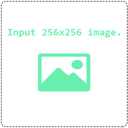

<div class="content">
    <div class="mat-elevation-z4 padding-24">
      <div>
          <h2 class="header-text">Process image</h2>
      </div>
      <div>
          <div class="flex flex-wrap flex-center">
              <div class="flex">
                  <div class="large-box mat-elevation-z4" >
                    <div class="file-input-wrap">
                        <input *ngIf="!hasImage" type="file" class="input-image" accept="image/jpg, image/jpeg, image/png" (change)="onSelectFile($event)">
                        <ng-container *ngIf="hasImage; else elseImage">
                            
                        </ng-container>
                        <ng-template #elseImage>
                            
                        </ng-template>
                    </div>
                  </div>
              </div>
              <div class="buttons">
                <div class="submit-button">
                    <button mat-mini-fab color="accent"  (click)="processImage()">
                        <mat-icon >child_care</mat-icon>
                    </button>
                </div>
                <div class="edit-button">
                    <button mat-mini-fab color="primary" (click)="editImageAsCanvas()">
                        <mat-icon >create</mat-icon>
                    </button>
                </div>
                <div class="clear-button">
                    <button mat-mini-fab color="warn" (click)="clearImage()">
                        <mat-icon >clear</mat-icon>
                    </button>
                </div>
              </div>
              <div class="flex">
                  <div class="large-box mat-elevation-z4">
                      
                  </div>
              </div>
          </div>
      </div>
    </div>
</div>
